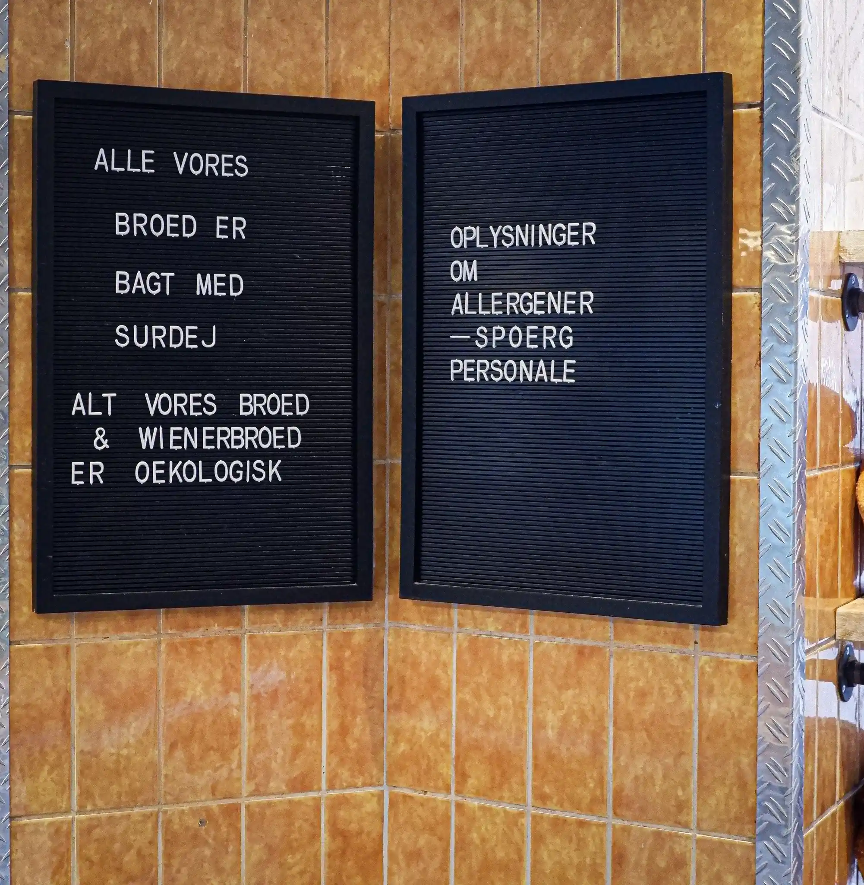

Vores Brød
Vores historie
Vores Brød er et økologiske surdejsbageri, hvor kvalitet og fællesskab er i centrum af alt, hvad vi gør! Med seks års passion og dedikation har vi været stolte over at være en del af lokalsamfundet siden vores grundlæggelse af bageriet.
Når vi bager, ligger vores fokus på surdej, og vi vægter økologi og enestående kvalitet. Vi bager på opskrifter, der sikrer, at hver bid indeholder den autentiske smag og kærlighed til bagning.
Få et indblik
Hvis du har et spørgsmål eller en henvendelse, er du mere end velkommen til at komme forbi os i butikken. Vi står klar til at hjælpe dig!
Find vores info herHåndværk
Vi vægter enestående kvalitet i vores håndværk med fokus på exceptionelle håndlavet produkter
Økologi
Økologi er en af vores grundsøjler, og vi bager vores produkter fra et økologisk udgangspunkt
Service
Vi prioriterer god kvalitet i service, og er drevet af fællesskab og forbindelse til lokalmiljøet